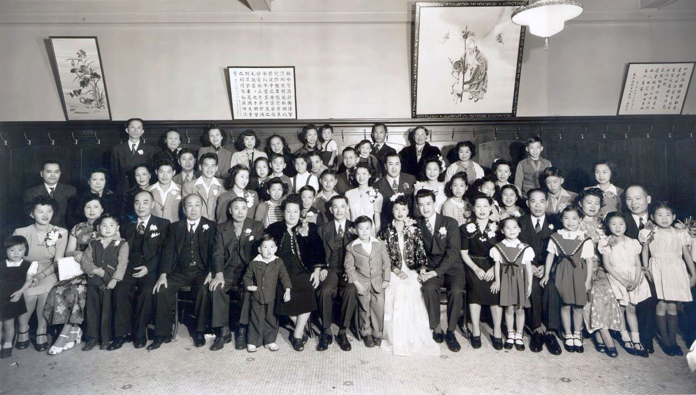
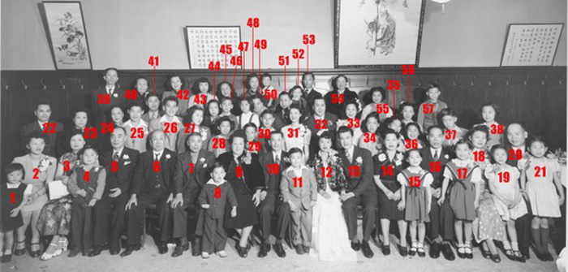

Note: This photograph depicts an event of a branch of the Chin (陳) clan belonging to the Wong Village (潢村), in Toisan County, Guangdong Province. In identifying the persons in this photo, Romanized spellings are used for Chinese names. Because of variations in dialects and in Romanization systems, no attempt has been made to use one consistent Romanization system throughout this document. Instead, the spellings of names used more closely represent the spellings used by individuals or their families so they might be more easily identified by those who knew them. Therefore, in some cases the clan surname is represented by Chin (a more common Toisanese spelling) and in some cases, Chan (a more common Cantonese spelling). Furthermore, some individuals are of the Chin clan, but have taken other surnames due to the system of taking “paper names” to immigrate during the period when the Chinese Exclusion Act was in effect.
Explanation: To understand this photograph, it is best to know the major family groups who are present and how they are related. The common ancestor of these family groups is Chin Ak Sein 陳德成. Chin Ak Sein (1799-1860) lived and is buried in the Wong village (潢村), the ancestral village. He had five sons. These major family groups each descend from one of these sons. Here are the five sons and the corresponding families:
Son No. 1: Chin Mein Du (陳明梓) – The son of Chin Mein Du, Chin Gong You (陳光耀), migrated from China to Oroville, California. He became a successful merchant there, establishing the Fong Lee Store. Four of the grandsons of Chin Gong You are present in this photo. They are Wing On Chan (陳永安 – son of Chan Sun Hee 陳純熙), and the three sons of Chan Wing Hee (陳榮熙) -- Chack Wing Chan (陳永卓), Wee Wing Chan (陳永偉), and Gaing Wing Chan (陳永建).
Son No. 2: Chin Mein Tan (陳明燦) – The son of Chin Mein Tan, Chin Hem Gong (陳添光), was adopted. Chin Hem Gong was the second son of Chin Mein Yuk (陳明煜), the younger brother of Chin Mein Tan. This was a common custom when a brother had no male descendant, that a brother would give one of his sons to that brother. Two sons of Chin Hem Gong and their families are present in the photo. They are Chin Uk Jiu (陳篤周) and Chin Hon Jiu (陳漢周).
Son No. 3: Chin Mein Yuk (陳明煜) – Other than the descendants of Chin Hem Gong, it does not appear that any descendants of Chin Mein Yuk are present in the photo.
Son No. 4: Chin Mein Non (陳明煖) – Chin Mein Non’s oldest son was Chin Gong Mee (陳光美). Three of his sons and their families are present in the photo. They are Chin Wing Jock (陳榮澤), Chin Wing Quong (陳榮廣), and Chin Wing Hon (陳榮汗). A younger son is Chin Gong Que (陳光喬). He is the father of the groom, George Lee. He and his family are present in the photo.
Son No. 5: Chin Mein Von (陳明煥) – The son of Chin Mein Von, Chin Gong Ji (陳光珠), is present in the photo. He is the only representative present from this branch of the family.